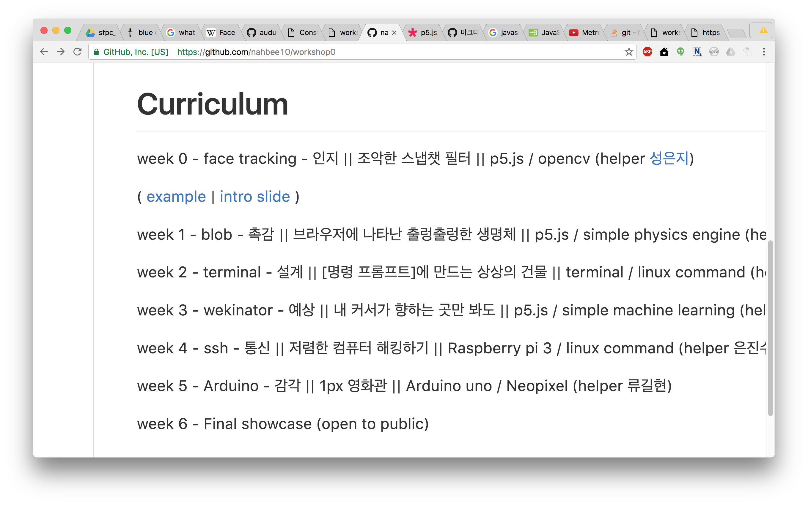
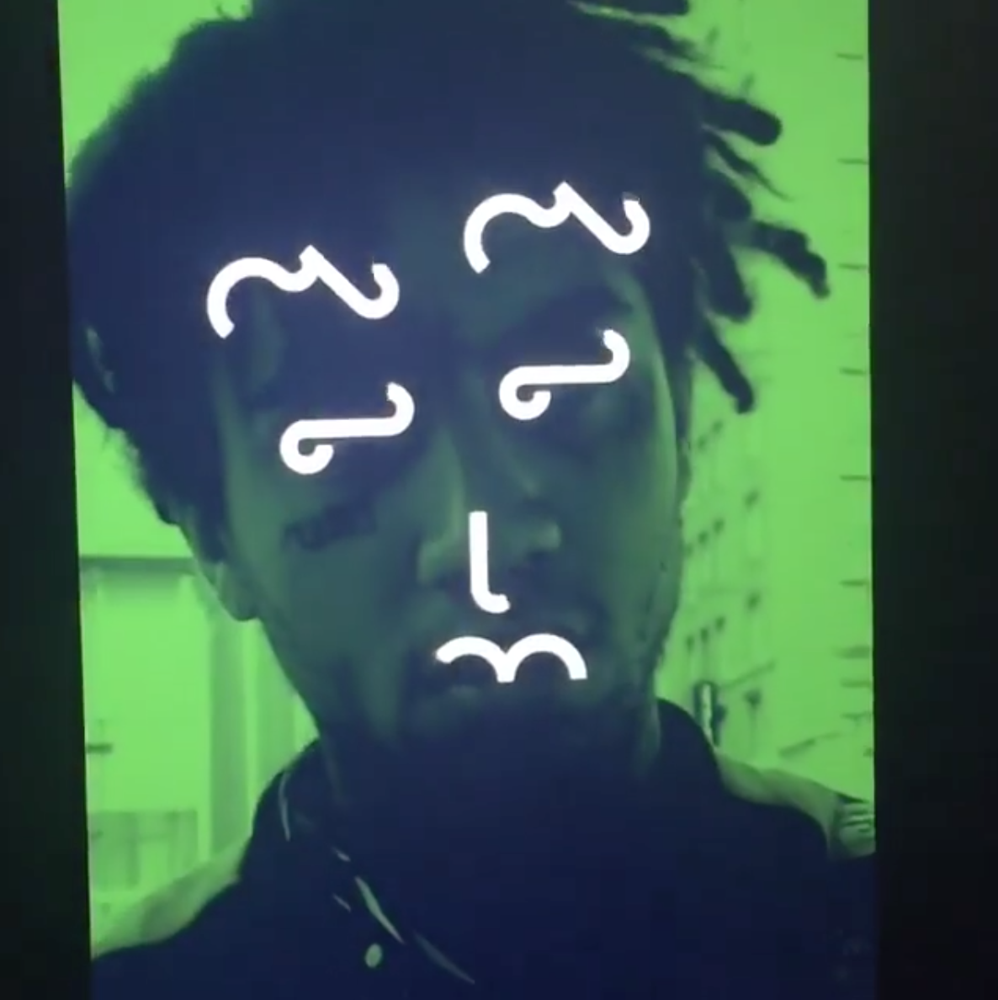

workshop0
week0 | Face Tracking
예제보기
https://github.com/nahbee10/workshop0 Face Tracking?
- 사람의 얼굴을 컴퓨터가 읽고 어디에 눈,코,입이 있는지, 얼굴의 윤곽은 어떻게 잡히는지 알아볼 수 있는 기술
- 우리가 이용할 라이브러리*는 Audun Mathias Oygard의 clmtrackr라는 라이브러리이며, Kyle McDonald가 p5버전으로 구현한 스케치 예제를 변형하여 사용합니다.
Face Tracking?
어느 좌표에 코를 비롯한 눈, 코, 입, 턱 등이 위치해 있을지 이 face tracking 라이브러리가 하나의 '묶음(array)'으로 데이터를 알려준다.
Face Tracking?
이 '묶음'에는 늘 0부터 70까지라는 이름표가 붙은
좌표(x,y) 데이터가 들어 있다.
각각의 숫자 이름표는 얼굴에서 다음 위치를 의미한다.
Face Tracking - code
if(positions.length>0){
// 눈(27번/32번) 위에 눈에 해당하는 이미지를 올립니다.
// 왼쪽 눈
image(img1, positions[27][0], positions[27][1], 70, 70);
// 오른쪽 눈
image(img1, positions[32][0], positions[32][1], 70, 70);
}Reference
Mask by Zach Lieberman
Reference
Blind self portrait by Kyle McDonald
코드를 읽어봅시다 - step1
sketch.jsvar capture;
var w = 640, h = 480;
function setup() {
capture = createCapture(VIDEO);
createCanvas(w, h);
capture.size(w, h);
capture.hide();
}
function draw() {
image(capture, 0, 0, w, h);
}
코드를 읽어봅시다 - step2
index.html라이브러리를 부른다.
코드를 읽어봅시다 - step3
sketch.jsvar capture;
var tracker;
var w = 640, h = 480;
function setup() {
capture = createCapture(VIDEO);
createCanvas(w, h);
capture.size(w, h);
capture.hide();
colorMode(HSB);
//new code!
tracker = new clm.tracker();
tracker.init(pModel);
tracker.start(capture.elt);
}
function draw() {
image(capture, 0, 0, w, h);
//new code!
var positions = tracker.getCurrentPosition();
}
코드를 읽어봅시다 - step4
sketch.jsvar capture;
var tracker;
var w = 640, h = 480;
// new code!!
var img1, img2, img3;
function preload() {
img1 = loadImage("img/eye.png");
img2 = loadImage("img/nose.png");
img3 = loadImage("img/mouse.png");
}
function setup() { //---생략
코드를 읽어봅시다 - step5
sketch.js if(positions.length>0){
// 눈(27번) 위에 눈에 해당하는 이미지를 올립니다.
image(img1, positions[27][0], positions[27][1], 70, 70);
image(img1, positions[32][0], positions[32][1], 70, 70);
// 코(62번) 위에 눈에 해당하는 이미지를 올립니다.
image(img2, positions[62][0], positions[62][1], 70, 70);
// 입(57번) 위에 눈에 해당하는 이미지를 올립니다.
image(img3, positions[57][0], positions[57][1], 70, 70);
}
실습 - 스케치열기 step 1
https://github.com/nahbee10/workshop0연두색 버튼 -> download zip 클릭해 코드를 다운 받습니다.
실습 - 스케치열기 step 2
MAMP를 엽니다.
실습 - 스케치열기 step 3
좌측 Preference를 클릭하고 4번째 Web Server 탭을 클릭합니다.
실습 - 스케치열기 step 4
step 1에서 다운로드 받은 폴더를 찾아 선택합니다.
실습 - 스케치열기 step 5
우측 Start Servers를 클릭해 서버를 켜줍니다.
실습 - 스케치열기 step 6
https://localhost:8888 로 접속합니다.
실습 - 코드 바꿔보기
다른 이미지를 올리고 싶은 경우//눈코입 위에 올릴 이미지를 불러옵니다.
//img폴더에 원하는 이미지를 넣고
//png 이미지라면, loadImage("img/이미지이름.png");
//jpg 이미지라면,loadImage("img/이미지이름.jpg");
//로 바꿔주세요!
function preload() {
img1 = loadImage("img/eye.png");
img2 = loadImage("img/nose.png");
img3 = loadImage("img/mouse.png");
}
실습 - 코드 바꿔보기
다른 위치에 이미지를 올리고 싶은 경우 if(positions.length>0){
// 슬라이드를 참고하셔서 원하는 얼굴부위 의 번호를 파악한 다음
// image(이미지변수이름, positions[얼굴부위번호][0], positions[얼굴부위번호][1], 이미지가로길이, 이미지세로길이);
// 이미지변수이름에서는 상단 function preload()에서 지정해줬던 이미지변수 중(img1, img2, img3) 원하는 것을
// 얼굴부위번호에는 수업 슬라이드를 참고하셔서 원하는 얼굴부위의 번호를
// 이미지가로길이, 이미지세로길이에는 원하는 이미지 가로, 세로 사이즈를 수치로 각각 올려주시면 됩니다.
// 여기서는 눈, 코, 입 중앙 기준으로 작성되어 있습니다.
// 눈(27번,32번) 위에 눈에 해당하는 이미지를 올립니다.
image(img1, positions[27][0], positions[27][1], 70, 70);
image(img1, positions[32][0], positions[32][1], 70, 70);
// 코(62번) 위에 눈에 해당하는 이미지를 올립니다.
image(img2, positions[62][0], positions[62][1], 70, 70);
// 입(57번) 위에 눈에 해당하는 이미지를 올립니다.
image(img3, positions[57][0], positions[57][1], 70, 70);
}
Homework
이미지를 바꿔보자
눈, 코, 입 말고 다른 부분에 이미지를 올려보자
----------------Challenge----------------
p5.js Shape reference를 참고해서 선, 원, 사각형 등의 도형을 얼굴 위에 그려보자.
Homework
다음 시간 수업을 열면서 서로 코드를 공유하는 feedback session
각자 변형한 코드를 웹에 올리기